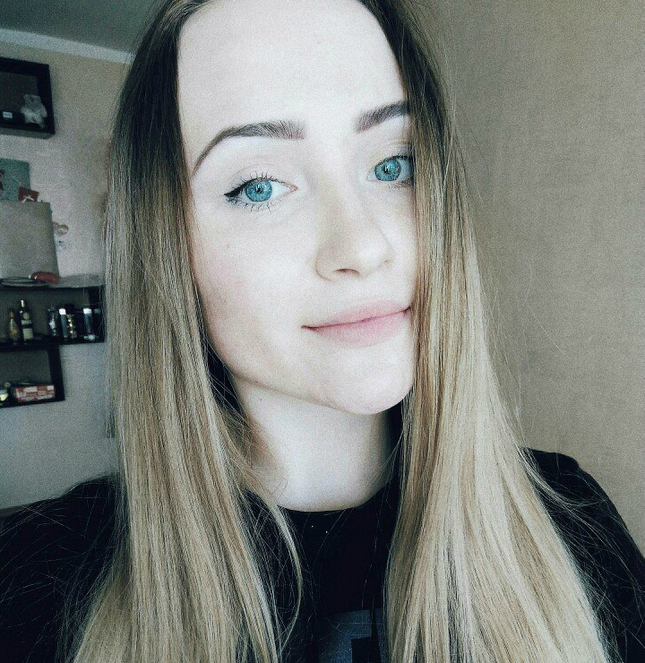

Моё хобби:
- Cтрельба
- Бег
- Люблю готовить
- Увлечение фотографией
Любимые книги:
- Л.Н.Толстой "Война и мир"
- Джоан Роулинг "Гарри Поттер"
- Митчелл Маргарет "Унесенные ветром"

Свобода не в том, что бы не сдерживать себя, а в том, что бы владеть собой.
Немного о себе.
Меня зовут Вика Григорьева, мне 18 лет. Родилась в п.Советский, до 11 класса училась в Средней Общеобразовательной школе №3. С 8 класса и по сей день увлекаюсь стрельбой.
Почему я выбрала ПГТУ?
Я выбрала Поволжский Государственный Технологический Университет, потому что знаю, что здесь я получу достойное образование. Потому что здесь для меня есть много возможностей для самореализации и саморазвития. Для меня ФИиВТ является одним из интереснейших и перспективных факультетов.